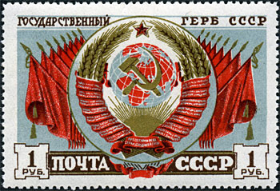
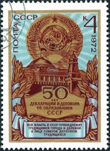
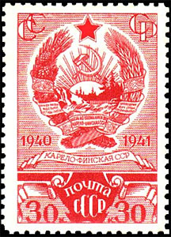
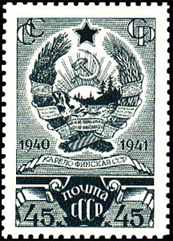
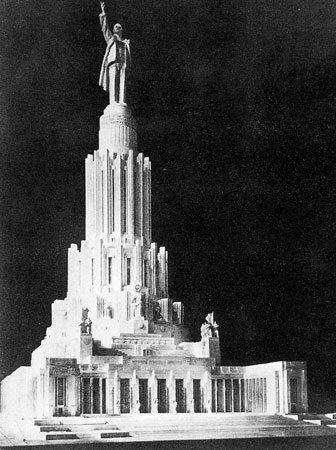
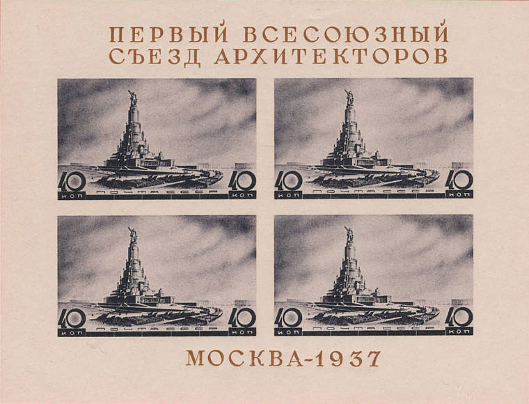
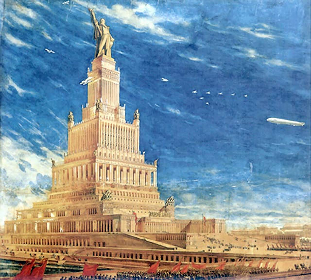

USSR - THE LONG JOURNEY FROM EVERYWHERE TO NOWHERE
Bandiera rossa la trionferà
Evviva il socialismo e la libertà!
("Red flag will be triumphant
Long live socialism and freedom!"
Italian communist song)On December 30, 1922 was created the Union of Soviet Socialist Republics. In this name there are no national or geographical restrictions. As conceived by the founders of this creation, it should spread throughout the world. The state emblem of the Soviet Union became a globe with the symbols of communism superimposed on it.


When the situation permitted, as well USSR as its state emblem were expanded, for example with the short lived Karelo-Finnish Soviet Socialist Republic, created in territory ceded by Finland in the Winter War (started by USSR).


On the day of the creation of USSR the early prominent Bolshevik leader Sergei Kirov proposed to build the Palace of the Soviet Union (PS). Comrade Kirov explained the symbolism: "This building should be the emblem of the coming greatness, the triumph of communism not only for us but also there, in the West."

And he said: "... the palace needs to be built in order to receive into the Soviet Union the LAST REPUBLIC." Nobody predicted then exactly which would be the last one: Soviet Socialist Republic of Argentina or of Uruguay, but they knew well – one day we will accept it into the fraternal family. For such a case it was decided to build the PS.Lenin died thirteen months later. Over the grave of Comrade Lenin, Comrade Stalin said the oath: "... Departing from us, Comrade Lenin bequeathed us to consolidate and extend the Union republic. We vow to thee, Comrade Lenin that we will fulfill with honor your commandment ..." “It was decided to cut down these words in giant letters into the walls of the main hall." The Palast of Soviets itself was thought as a monument to Lenin. But only at first glance. The idea was somewhat different: Marx and Engels, the founders of the theory, get gigantic monuments at the base of the Palast, but in comparison with the hundred-meter high Lenin they were tiny. For Lenin, the practitioner, the one who began to implement the theory, which brought "a happy life" to one-sixth of the globe, for that he deserved an immense statue. But the main things in the Palast of Soviets are not Marx, Engels, and not even Lenin, but it is Stalin's vow. The monument symbolizes the ultimate victory of communism on earth and had to be a visible expression of the fulfilled oath.

When a monarch raised a monument to his predecessor, he raised it for himself, he decorated his capital, he showed his subjects and his foes his power and wealth ... The image of Stalin was not visibly present in statues and bas-reliefs, but this church was to become his temple: Stalin - The Greatest Creator of things in the world's history. Comrade Stalin promised to extend the Union - that was his vow on the wall - Stalin honorably fulfilled his vow!That was the plan ... The Palace of the Soviets (Russian: Dvorets Sovetov) was a project to construct an administrative center and a congress hall in Moscow, Russia, near the Kremlin, on the site of the demolished Cathedral of Christ the Savior. The architectural contest for the Palace of the Soviets (1931–1933) was won by Boris Iofan's neoclassical concept, subsequently revised by Iofan, Vladimir Shchuko and Vladimir Gelfreikh into a super tall skyscraper. If built, it would have become the world's tallest structure of its time. Construction started in 1937, and was stopped due to the Nazi German invasion in 1941. In 1941–1942, its steel frame was disassembled for use in fortifications and bridges. Construction was never resumed. In 1958, the foundations of the Palace were converted into what would become the world's largest open-air heated swimming pool. The Cathedral was rebuilt in 1995–2000. Source

When asked why the Palast of Soviets was not built, it is simple to answer: because Stalin did not fulfill his oath. Because Stalin unleashed the Second World War but he finished it inside of almost the same borders where it began. He knew that long-term coexistence with the normal society is impossible but it could not conquer it. The results of the Second World War meant the end of communism. It was a historic defeat. Next could follow only the collapse. Sooner or later. And the "victory" in the war actually meant the defeat of communism worldwide. It wasn't possible anymore to take the last republic into Soviet Union, and for this reason the palace was not required for a solemn act . Main source: Viktor Suvorov "The Last Republic".
If you wish to contact me by e-mail, please click here (take out spaam)
|
Published: 12/07/2011. Revised: 1/31/2024. |